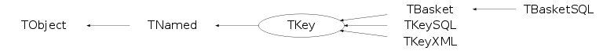

class TKey: public TNamed
The TKey class includes functions to book space in a file, to create I/O buffers, to fill these buffers, to compress/uncompress data buffers. Before saving (making persistent) an object in a file, a key must be created. The key structure contains all the information to uniquely identify a persistent object in a file. fNbytes = Number of bytes for the compressed object+key fObjlen = Length of uncompressed object fDatime = Date/Time when the object was written fKeylen = Number of bytes for the key structure fCycle = Cycle number of the object fSeekKey = Address of the object on file (points to fNbytes) This is a redundant information used to cross-check the data base integrity. fSeekPdir = Pointer to the directory supporting this object fClassName = Object class name fName = Name of the object fTitle = Title of the object In the 16 highest bits of fSeekPdir is encoded a pid offset. This offset is to be added to the pid index stored in the TRef object and the referenced TObject. The TKey class is used by ROOT to: - to write an object in the current directory - to write a new ntuple buffer The structure of a file is shown in TFile::TFile. The structure of a directory is shown in TDirectoryFile ctor. The TKey class is used by the TBasket class. See also TTree.
Function Members (Methods)
public:
| TKey() | |
| TKey(TDirectory* motherDir) | |
| TKey(TDirectory* motherDir, const TKey& orig, UShort_t pidOffset) | |
| TKey(Long64_t pointer, Int_t nbytes, TDirectory* motherDir = 0) | |
| TKey(const TObject* obj, const char* name, Int_t bufsize, TDirectory* motherDir = 0) | |
| TKey(const char* name, const char* title, const TClass* cl, Int_t nbytes, TDirectory* motherDir = 0) | |
| TKey(const TString& name, const TString& title, const TClass* cl, Int_t nbytes, TDirectory* motherDir = 0) | |
| TKey(const void* obj, const TClass* cl, const char* name, Int_t bufsize, TDirectory* motherDir = 0) | |
| virtual | ~TKey() |
| void | TObject::AbstractMethod(const char* method) const |
| virtual void | TObject::AppendPad(Option_t* option = "") |
| virtual void | Browse(TBrowser* b) |
| static TClass* | Class() |
| virtual const char* | TObject::ClassName() const |
| virtual void | TNamed::Clear(Option_t* option = "") |
| virtual TObject* | TNamed::Clone(const char* newname = "") const |
| virtual Int_t | TNamed::Compare(const TObject* obj) const |
| virtual void | TNamed::Copy(TObject& named) const |
| virtual void | Delete(Option_t* option = "") |
| virtual void | DeleteBuffer() |
| virtual Int_t | TObject::DistancetoPrimitive(Int_t px, Int_t py) |
| virtual void | TObject::Draw(Option_t* option = "") |
| virtual void | TObject::DrawClass() constMENU |
| virtual TObject* | TObject::DrawClone(Option_t* option = "") constMENU |
| virtual void | TObject::Dump() constMENU |
| virtual void | TObject::Error(const char* method, const char* msgfmt) const |
| virtual void | TObject::Execute(const char* method, const char* params, Int_t* error = 0) |
| virtual void | TObject::Execute(TMethod* method, TObjArray* params, Int_t* error = 0) |
| virtual void | TObject::ExecuteEvent(Int_t event, Int_t px, Int_t py) |
| virtual void | TObject::Fatal(const char* method, const char* msgfmt) const |
| virtual void | FillBuffer(char*& buffer) |
| virtual TObject* | TObject::FindObject(const char* name) const |
| virtual TObject* | TObject::FindObject(const TObject* obj) const |
| virtual char* | GetBuffer() const |
| TBuffer* | GetBufferRef() const |
| virtual const char* | GetClassName() const |
| Short_t | GetCycle() const |
| const TDatime& | GetDatime() const |
| virtual Option_t* | TObject::GetDrawOption() const |
| static Long_t | TObject::GetDtorOnly() |
| TFile* | GetFile() const |
| virtual const char* | GetIconName() const |
| Short_t | GetKeep() const |
| Int_t | GetKeylen() const |
| TDirectory* | GetMotherDir() const |
| virtual const char* | TNamed::GetName() const |
| Int_t | GetNbytes() const |
| virtual char* | TObject::GetObjectInfo(Int_t px, Int_t py) const |
| static Bool_t | TObject::GetObjectStat() |
| Int_t | GetObjlen() const |
| virtual Option_t* | TObject::GetOption() const |
| virtual Long64_t | GetSeekKey() const |
| virtual Long64_t | GetSeekPdir() const |
| virtual const char* | GetTitle() const |
| virtual UInt_t | TObject::GetUniqueID() const |
| Int_t | GetVersion() const |
| virtual Bool_t | TObject::HandleTimer(TTimer* timer) |
| virtual ULong_t | Hash() const |
| virtual void | IncrementPidOffset(UShort_t offset) |
| virtual void | TObject::Info(const char* method, const char* msgfmt) const |
| virtual Bool_t | TObject::InheritsFrom(const char* classname) const |
| virtual Bool_t | TObject::InheritsFrom(const TClass* cl) const |
| virtual void | TObject::Inspect() constMENU |
| void | TObject::InvertBit(UInt_t f) |
| virtual TClass* | IsA() const |
| virtual Bool_t | TObject::IsEqual(const TObject* obj) const |
| virtual Bool_t | IsFolder() const |
| Bool_t | TObject::IsOnHeap() const |
| virtual Bool_t | TNamed::IsSortable() const |
| Bool_t | TObject::IsZombie() const |
| virtual void | Keep() |
| virtual void | ls(Option_t* option = "") const |
| void | TObject::MayNotUse(const char* method) const |
| virtual Bool_t | TObject::Notify() |
| void | TObject::Obsolete(const char* method, const char* asOfVers, const char* removedFromVers) const |
| static void | TObject::operator delete(void* ptr) |
| static void | TObject::operator delete(void* ptr, void* vp) |
| static void | TObject::operator delete[](void* ptr) |
| static void | TObject::operator delete[](void* ptr, void* vp) |
| void* | TObject::operator new(size_t sz) |
| void* | TObject::operator new(size_t sz, void* vp) |
| void* | TObject::operator new[](size_t sz) |
| void* | TObject::operator new[](size_t sz, void* vp) |
| virtual void | TObject::Paint(Option_t* option = "") |
| virtual void | TObject::Pop() |
| virtual void | Print(Option_t* option = "") const |
| virtual Int_t | Read(TObject* obj) |
| virtual void | ReadBuffer(char*& buffer) |
| virtual Bool_t | ReadFile() |
| void | ReadKeyBuffer(char*& buffer) |
| virtual TObject* | ReadObj() |
| virtual void* | ReadObjectAny(const TClass* expectedClass) |
| virtual TObject* | ReadObjWithBuffer(char* bufferRead) |
| virtual void | TObject::RecursiveRemove(TObject* obj) |
| void | TObject::ResetBit(UInt_t f) |
| virtual void | TObject::SaveAs(const char* filename = "", Option_t* option = "") constMENU |
| virtual void | TObject::SavePrimitive(ostream& out, Option_t* option = "") |
| void | TObject::SetBit(UInt_t f) |
| void | TObject::SetBit(UInt_t f, Bool_t set) |
| virtual void | SetBuffer() |
| virtual void | TObject::SetDrawOption(Option_t* option = "")MENU |
| static void | TObject::SetDtorOnly(void* obj) |
| void | SetMotherDir(TDirectory* dir) |
| virtual void | TNamed::SetName(const char* name)MENU |
| virtual void | TNamed::SetNameTitle(const char* name, const char* title) |
| static void | TObject::SetObjectStat(Bool_t stat) |
| virtual void | SetParent(const TObject* parent) |
| virtual void | TNamed::SetTitle(const char* title = "")MENU |
| virtual void | TObject::SetUniqueID(UInt_t uid) |
| virtual void | ShowMembers(TMemberInspector& insp) |
| virtual Int_t | Sizeof() const |
| virtual void | Streamer(TBuffer& b) |
| void | StreamerNVirtual(TBuffer& b) |
| virtual void | TObject::SysError(const char* method, const char* msgfmt) const |
| Bool_t | TObject::TestBit(UInt_t f) const |
| Int_t | TObject::TestBits(UInt_t f) const |
| virtual void | TObject::UseCurrentStyle() |
| virtual void | TObject::Warning(const char* method, const char* msgfmt) const |
| virtual Int_t | TObject::Write(const char* name = 0, Int_t option = 0, Int_t bufsize = 0) |
| virtual Int_t | TObject::Write(const char* name = 0, Int_t option = 0, Int_t bufsize = 0) const |
| virtual Int_t | WriteFile(Int_t cycle = 1, TFile* f = 0) |
protected:
| void | Build(TDirectory* motherDir, const char* classname, Long64_t filepos) |
| virtual void | Create(Int_t nbytes, TFile* f = 0) |
| virtual void | TObject::DoError(int level, const char* location, const char* fmt, va_list va) const |
| void | TObject::MakeZombie() |
| virtual Int_t | Read(const char* name) |
| virtual void | Reset() |
| virtual Int_t | WriteFileKeepBuffer(TFile* f = 0) |
Data Members
public:
| enum TObject::EStatusBits { | kCanDelete | |
| kMustCleanup | ||
| kObjInCanvas | ||
| kIsReferenced | ||
| kHasUUID | ||
| kCannotPick | ||
| kNoContextMenu | ||
| kInvalidObject | ||
| }; | ||
| enum TObject::[unnamed] { | kIsOnHeap | |
| kNotDeleted | ||
| kZombie | ||
| kBitMask | ||
| kSingleKey | ||
| kOverwrite | ||
| kWriteDelete | ||
| }; |
protected:
| char* | fBuffer | Object buffer |
| TBuffer* | fBufferRef | Pointer to the TBuffer object |
| TString | fClassName | Object Class name |
| Short_t | fCycle | Cycle number |
| TDatime | fDatime | Date/Time of insertion in file |
| Short_t | fKeylen | Number of bytes for the key itself |
| Int_t | fLeft | Number of bytes left in current segment |
| TDirectory* | fMotherDir | ! pointer to mother directory |
| TString | TNamed::fName | object identifier |
| Int_t | fNbytes | Number of bytes for the object on file |
| Int_t | fObjlen | Length of uncompressed object in bytes |
| UShort_t | fPidOffset | ! Offset to be added to the pid index in this key/buffer. This is actually saved in the high bits of fSeekPdir |
| Long64_t | fSeekKey | Location of object on file |
| Long64_t | fSeekPdir | Location of parent directory on file |
| TString | TNamed::fTitle | object title |
| Int_t | fVersion | Key version identifier |
Class Charts
{kind=link}
{kind=link}
{kind=link}
{kind=link}

Function documentation
TKey(TDirectory* motherDir, const TKey& orig, UShort_t pidOffset)
TKey(Long64_t pointer, Int_t nbytes, TDirectory* motherDir = 0)
TKey(const char* name, const char* title, const TClass* cl, Int_t nbytes, TDirectory* motherDir = 0)
TKey(const TString& name, const TString& title, const TClass* cl, Int_t nbytes, TDirectory* motherDir = 0)
TKey(const TObject* obj, const char* name, Int_t bufsize, TDirectory* motherDir = 0)
TKey(const void* obj, const TClass* cl, const char* name, Int_t bufsize, TDirectory* motherDir = 0)
void Build(TDirectory* motherDir, const char* classname, Long64_t filepos)
method used in all TKey constructor to initialize basic data fields filepos is used to calculate correct version number of key if filepos==-1, end of file position is used
void Browse(TBrowser* b)
Read object from disk and call its Browse() method. If object with same name already exist in memory delete it (like TDirectoryFile::Get() is doing), except when the key references a folder in which case we don't want to re-read the folder object since it might contain new objects not yet saved.
void IncrementPidOffset(UShort_t offset)
Increment fPidOffset by 'offset'. This offset is used when a key (or basket) is transfered from one file to the other. In this case the TRef and TObject might have stored a pid index (to retrieve TProcessIDs) which refered to their order on the original file, the fPidOffset is to be added to those values to correctly find the TProcessID. This fPidOffset needs to be increment if the key/basket is copied and need to be zero for new key/basket.
TObject * ReadObj()
To read a TObject* from the file. The object associated to this key is read from the file into memory Once the key structure is read (via Streamer) the class identifier of the object is known. Using the class identifier we find the TClass object for this class. A TClass object contains a full description (i.e. dictionary) of the associated class. In particular the TClass object can create a new object of the class type it describes. This new object now calls its Streamer function to rebuilt itself. see TKey::ReadObjectAny to read any object non-derived from TObject NOTE: In case the class of this object derives from TObject but not as a first inheritance, one must cast the return value twice. Example1: Normal case: class MyClass : public TObject, public AnotherClass then on return, one can do: MyClass *obj = (MyClass*)key->ReadObj(); Example2: Special case: class MyClass : public AnotherClass, public TObject then on return, one must do: MyClass *obj = dynamic_cast<MyClass*>(key->ReadObj()); Of course, dynamic_cast<> can also be used in the example 1.
TObject * ReadObjWithBuffer(char* bufferRead)
To read a TObject* from bufferRead. This function is identical to TKey::ReadObj, but it reads directly from bufferRead instead of reading from a file. The object associated to this key is read from the buffer into memory Using the class identifier we find the TClass object for this class. A TClass object contains a full description (i.e. dictionary) of the associated class. In particular the TClass object can create a new object of the class type it describes. This new object now calls its Streamer function to rebuilt itself. NOTE : This function is called only internally by ROOT classes. Although being public it is not supposed to be used outside ROOT. If used, you must make sure that the bufferRead is large enough to accomodate the object being read.
void * ReadObjectAny(const TClass* expectedClass)
To read an object (non deriving from TObject) from the file. If expectedClass is not null, we checked that that actual class of the object stored is suitable to be stored in a pointer pointing to an object of class 'expectedClass'. We also adjust the value of the returned address so that it is suitable to be cast (C-Style) a a pointer pointing to an object of class 'expectedClass'. So for example if the class Bottom inherits from Top and the object stored is of type Bottom you can safely do: TClass *TopClass = TClass::GetClass("Top"); Top *ptr = (Top*) key->ReadObjectAny( TopClass ); if (ptr==0) printError("the object stored in the key is not of the expected type\n"); The object associated to this key is read from the file into memory Once the key structure is read (via Streamer) the class identifier of the object is known. Using the class identifier we find the TClass object for this class. A TClass object contains a full description (i.e. dictionary) of the associated class. In particular the TClass object can create a new object of the class type it describes. This new object now calls its Streamer function to rebuilt itself.
Int_t Read(TObject* obj)
To read an object from the file. The object associated to this key is read from the file into memory. Before invoking this function, obj has been created via the default constructor.
void ReadBuffer(char*& buffer)
Decode input buffer. In some situation will add key to gDirectory ???
Int_t WriteFile(Int_t cycle = 1, TFile* f = 0)
Write the encoded object supported by this key. The function returns the number of bytes committed to the file. If a write error occurs, the number of bytes returned is -1.
Int_t WriteFileKeepBuffer(TFile* f = 0)
Write the encoded object supported by this key. The function returns the number of bytes committed to the file. If a write error occurs, the number of bytes returned is -1.